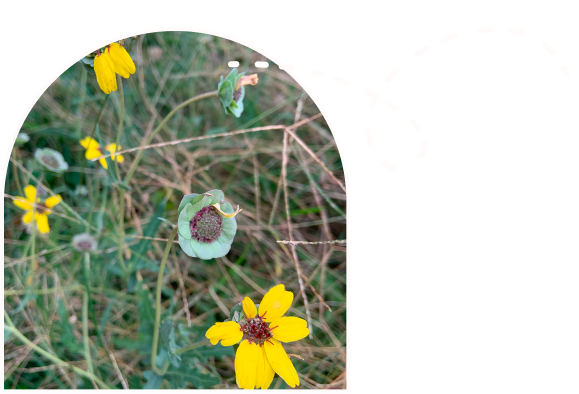
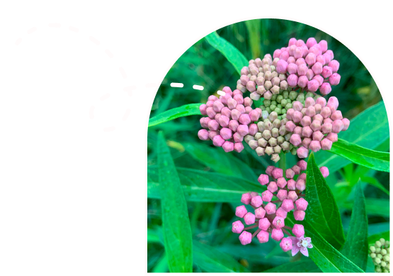
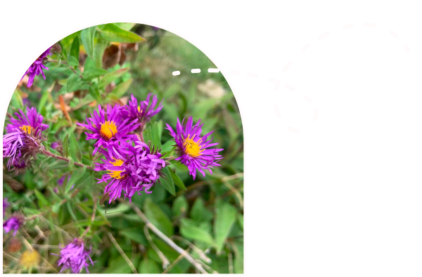
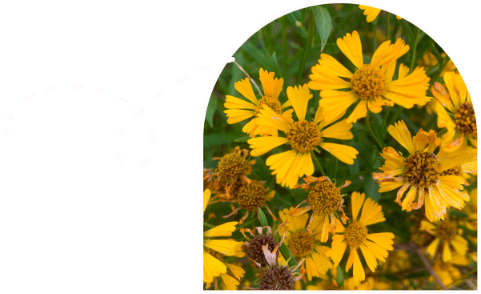

Wildflowers

Chocolate Daisy
(Berlandiera lyrata) Chocolate flowers attract butterflies, hummingbirds, and other important pollinators to the garden. An herbaceous perennial, the chocolate scented daisy grows to 2 feet in height. Growing chocolate flower plants with abundant growth may take on the form of a sprawling ground cover, so allow plenty of room when planting.

Swamp Milkweed
(Asclepias incarnata) is a member of the milkweed family. Its flowers are loved by bees and butterflies. Like other milkweed species, it serves as critical host for Monarch Butterflies.

New England Aster
(Symphyotrichum novae-angliae) is a fall flower. In the late summer to early fall, the profuse daisy-like blooms appear. Pollinators love the blooms.
